Note
Click here to download the full example code
Create a stationary covariance model¶
This use case illustrates how the User can create a covariance function from parametric models. The library implements the multivariate Exponential model as a parametric model for the covariance function where the spatial covariance function  writes:
writes:
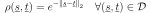
It is possible to define the exponential model from the spatial covariance matrix 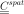 rather than the correlation matrix 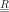:
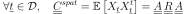
with:
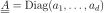
We call 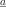 the amplitude vector and 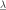 the scale vector.
The library implements the multivariate exponential model thanks to the object ExponentialModel which is created from:
the scale and amplitude vectors 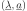: in that case, by default 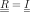;
the scale and amplitude vectors and the spatial correlation matrix ;
the scale and amplitude vectors and the spatial covariance matrix 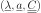; Then 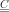 is mapped into the associated correlation matrix and the previous constructor is used.
import openturns as ot
import openturns.viewer as viewer
from matplotlib import pylab as plt
import math as m
ot.Log.Show(ot.Log.NONE)
Create the amplitude vector (output dimension 3)
amplitude = [1.0, 2.0, 3.0]
# Scale vector (input dimension 1)
scale = [4.0]
# spatialCorrelation
spatialCorrelation = ot.CorrelationMatrix(3)
spatialCorrelation[0, 1] = 0.8
spatialCorrelation[0, 2] = 0.6
spatialCorrelation[1, 2] = 0.1
# spatialCovariance
spatialCovariance = ot.CovarianceMatrix(3)
spatialCovariance[0, 0] = 4.0
spatialCovariance[1, 1] = 5.0
spatialCovariance[2, 2] = 6.0
spatialCovariance[0, 1] = 1.2
spatialCovariance[0, 2] = 0.9
spatialCovariance[1, 2] = -0.2
Create the covariance model from the amplitude and scale, no spatial correlation
ot.ExponentialModel(scale, amplitude)
or from the amplitude, scale and spatialCovariance
ot.ExponentialModel(scale, amplitude, spatialCorrelation)
or from the scale and spatialCovariance
ot.ExponentialModel(scale, spatialCovariance)
Total running time of the script: ( 0 minutes 0.002 seconds)